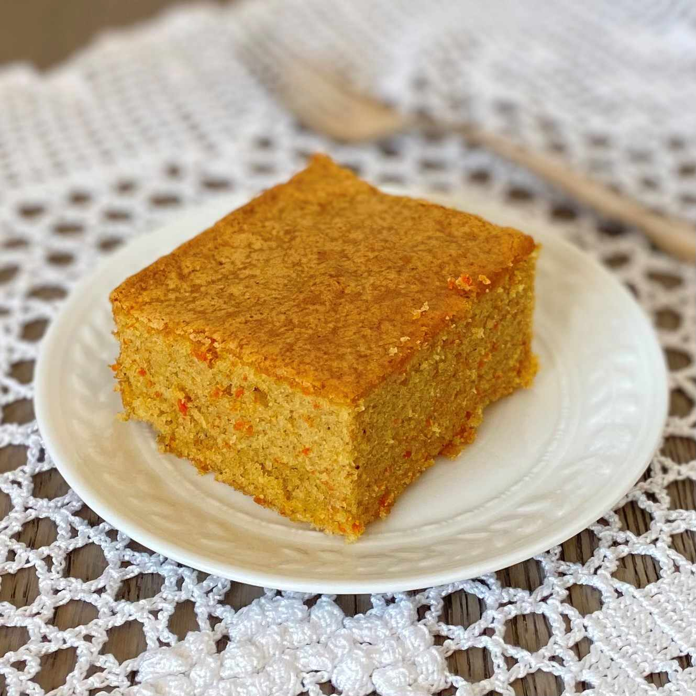

Brazillian Carrot Cake

This recipe is our twist on the traditional Brazillian Carrot Cake. We love this traditional carrot cake recipe because of how easy and yummy it is. One of the times we were craving this cake we were on a sugar detox where we were trying to limit our added sugar intake. We decided to add bananas to the traditional recipe to reduce added sugar and thus was born this Banana carrot franken bread!!
Ingredients
- 150g Carrots
- 4 Yellaki bananas
- 162g Sugar
- 2 Eggs
- 125ml Oil
- 128g All purpose flour
- 1/2 tbsp Baking soda
- Pinch of salt
Directions
- Wash, peel and roughly chop the carrots. Add chopped carrots and bananas to a blender and blend till smooth.
- Add oil, sugar and eggs to the blender and blend till mixed.
- In a Bowl, sift in the flour and baking soda. Add a pinch of salt and mix the dry ingredients.
- Pour wet ingredients into the bowl and fold till mixed.
- Pour the batter into a greased loaf tin and bake in a pre-heated oven at 180c for 30-35 min.
- Take out of the oven and rest for atlease 15 min.
- Dig in!!!!